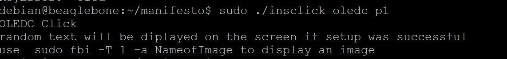
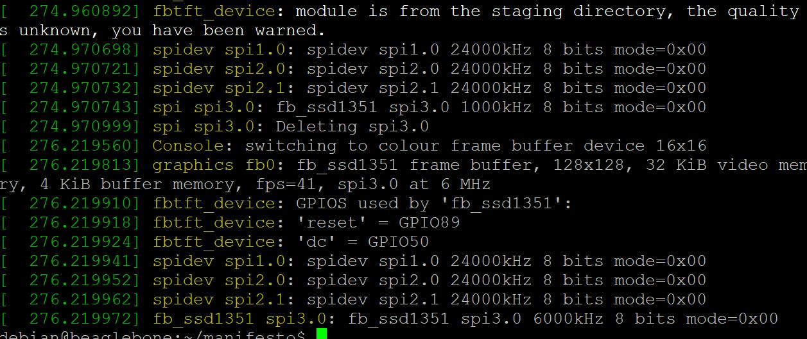
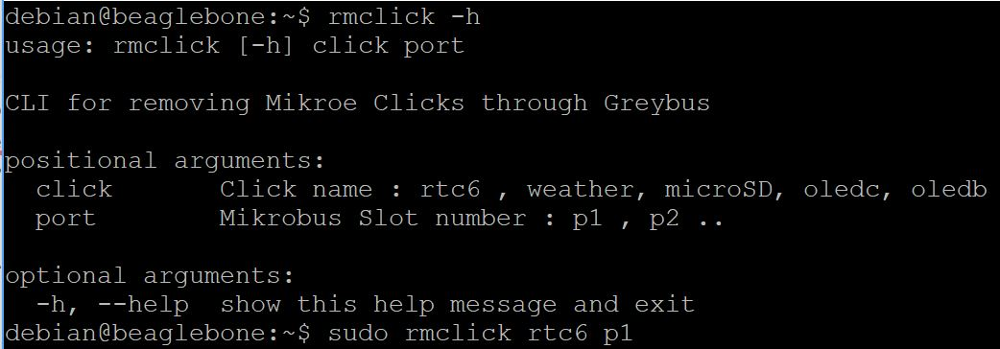

OLED C Click Support
This post contains a basic test demonstration for the work in progress spi based OLEDC click support through greybus, This post assumes that GBSIM is correctly installed and setup in your board.OLED C click is equipped with the 96x96 high-color OLED display. It can display up to 65K/262K different colors and shades on a compact size display, based on the OLED technology. The OLED technology provides a very good brightness-to-contrast ratio, doesn’t require any backlight - since the pixel elements emit light on their own, better angle of viewing - compared to traditional TFT screens, better power consumption, better picture quality, better response times and more.
Start GBSIM
Before inserting the click manifest start gbsim wither using the start script or by separately modprobe the modules and running gbsim.
sudo sh startgbsim.shInsert the Click Manifest using the CLI
Clone and setup the insclick CLI along with the manifesto tool and create the manifest blobs
git clone https://github.com/vaishnav98/manifesto.git
cd manifesto
./manifesto -o manifests/oledc_spi1.mnfb manifests/oledc_spi1.mnfsNow Connect the Click Board to the corresponding slot and then using the insclick CLI the click can be easily interfaced
sudo ./insclick oledc p1Output
The output of the Command Line Interface should be similar to this:
 The dmesg log output should be similar to this: A new device will be created at /dev/fb0 if the click was loaded correctly, a new image can be displayed on the OLED C click using the following commands:
sudo fbi -T 1 -a NameofImageUnloading the Click
The rmclick utility/command can be used to remove/free the Greybus Interface and Unload the Click, the rmclick usage is:
The oledc click can be removed by running the following command:
sudo ./rmclick oledc